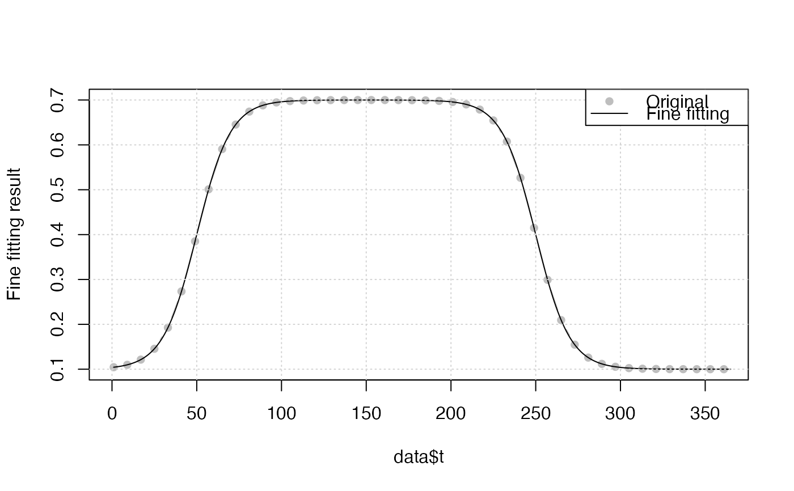

double logistics, piecewise logistics and many other functions to curve fit VI time-series.
Logistic(par, t) doubleLog.Zhang(par, t) doubleLog.AG(par, t) doubleLog.AG2(par, t) doubleLog.Beck(par, t) doubleLog.Elmore(par, t) doubleLog.Gu(par, t) doubleLog.Klos(par, t)
| par | A vector of parameters |
|---|---|
| t | A |
Logistic The traditional simplest logistic function. It can
be only used in half growing season, i.e. vegetation green-up or senescence
period.
doubleLog.Zhang Piecewise logistics, (Zhang Xiaoyang, RSE, 2003).
doubleAG Asymmetric Gaussian.
doubleLog.Beck Beck logistics.
doubleLog.Gu Gu logistics.
doubleLog.Elmore Elmore logistics.
doubleLog.Klos Klos logistics.
All of those function have par and formula attributes for the
convenience for analytical D1 and D2
Beck, P.S.A., Atzberger, C., Hogda, K.A., Johansen, B., Skidmore, A.K., 2006. Improved monitoring of vegetation dynamics at very high latitudes: A new method using MODIS NDVI. Remote Sens. Environ. https://doi.org/10.1016/j.rse.2005.10.021.
Elmore, A.J., Guinn, S.M., Minsley, B.J., Richardson, A.D., 2012.
Landscape controls on the timing of spring, autumn, and growing season
length in mid-Atlantic forests. Glob. Chang. Biol. 18, 656-674.
https://doi.org/10.1111/j.1365-2486.2011.02521.x.
Gu, L., Post, W.M., Baldocchi, D.D., Black, TRUE.A., Suyker, A.E., Verma,
S.B., Vesala, TRUE., Wofsy, S.C., 2009. Characterizing the Seasonal Dynamics
of Plant Community Photosynthesis Across a Range of Vegetation Types,
in: Noormets, A. (Ed.), Phenology of Ecosystem Processes: Applications
in Global Change Research. Springer New York, New York, NY, pp. 35-58.
https://doi.org/10.1007/978-1-4419-0026-5_2.
Peter M. Atkinson, et al., 2012, RSE, 123:400-417
https://github.com/cran/phenopix/blob/master/R/FitDoubleLogGu.R
library(phenofit) # simulate vegetation time-series fFUN = doubleLog.Beck par = c( mn = 0.1, mx = 0.7, sos = 50, rsp = 0.1, eos = 250, rau = 0.1) t <- seq(1, 365, 8) tout <- seq(1, 365, 1) y <- fFUN(par, t) methods <- c("AG", "Beck", "Elmore", "Gu", "Zhang") r <- FitDL.AG(y, t, tout) plot(t, y) lines(tout, r$zs$iter2, col = "red") legend('topright', c('Original time-series', 'AG smoothed'), lty = c(0, 1), pch = c(16, NA), col = c("black", "red")) 